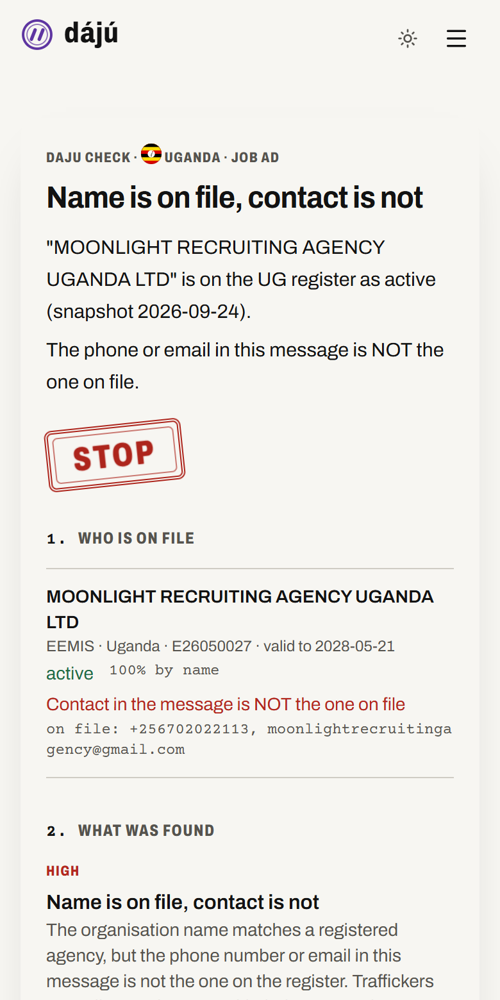
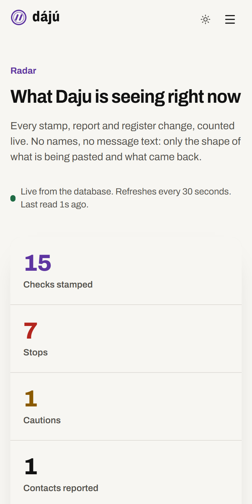

dájú
Paste a job message. Daju checks the name, number and email against the government registers of Nigeria, Kenya, Uganda and Ghana.
usedaju.vercel.app · @DajuCheckBot on Telegram
StacStart Borderless Bytes 2026 · Future of Work · Yoruba: dájú, to be sure
The problem
The common job scam in these four countries no longer invents a company. It borrows the name of a real, licensed recruitment agency and swaps in the scammer's own WhatsApp number. The message looks right. Only the contact is wrong.
EEMIS · UGANDA · LICENCE E26050027
Moonlight Recruiting Agency Uganda Ltd
On file: +256 702 022 113
In the message: +256 756 000 111
STOP · Name is on file, contact is not
The register entry is real (EEMIS, snapshot 24 Sept 2026). The message is a composite built from the pattern in official warnings.
Why now
751
Kenyans rescued from Myanmar scam compounds since 2022
Kenya MFA to the Senate, May 2026
156
Nigerians rescued from scam centres, Jan to Jul 2026, lured by fake IT and customer-service jobs
NAPTIP, July 2026
275
recruitment licences revoked by Uganda's labour ministry in one month
PML Daily, April 2026
8 Sept
Ghana announces it will publish its list of licensed agencies
GBC, September 2026
The official advice is to check the register. Nobody made the register checkable from a WhatsApp message.
Why not just ask a chatbot?
| The question | General AI chatbot | Daju |
|---|---|---|
| Is this agency licensed today? | Guesses; no dated register | Four registers, each with its date |
| Is this their real phone or email? | Cannot know | Compared with the contact on file |
| Did this employer really send it? | Cannot know | Proved by the company's DNS record |
| Is this contract clause legal? | May invent a section | Labour Act section or court judgment |
| Same message, same answer? | Not guaranteed | Same rules, same stamp |
Daju can use a language model to tidy what it reads and to translate replies. No model ever decides a stamp.
The product
Names, numbers, emails, domains and amounts in the message
All four agency registers at once
The contact in the message with the contact on file
21 patterns from official warnings, 6 contract clauses against labour law
The reply to send, and the official hotline for your country
Also checks the sender's domain: age, mail records, lookalikes, and whether its website is live and names the company.

The card
Stop · money before work, wrong contact, expired licence, a known lure
Caution · signals worth checking before you reply
On file · the register and the contact both match
Not on file · normal for a direct employer; here is how to check it
Each card has a link and a WhatsApp preview image, so it can be shared straight into the group the scam came from.
For employers
One TXT record. No paperwork, no account password.
Offer links and job posts show candidates a verified sender.
Your name from any other address is stamped Stop.
Tested live on 26 Sept with austinchris.me: the company name from a Gmail address or a WhatsApp number gets Stop; from careers@austinchris.me it gets On file.
Real data
| Country | Register | Entries | Snapshot | Holds |
|---|---|---|---|---|
| Nigeria | NELEX, Ministry of Labour | 1,186 | 28 Sept | Email, CAC flag |
| Kenya | NEA, via diaspora.go.ke | 1,295 (515 valid) | 18 May | Licence, validity |
| Uganda | EEMIS, Ministry of Labour | 187 | 28 Sept | Phone, licence dates |
| Ghana | GLMIS, Ministry of Labour | 322 | 28 Sept | Email, location |
Re-read every Monday, automatically; the difference is committed. 24 Sept: 5 Ugandan agencies left EEMIS. 28 Sept: 3 more left.
Kenya's NEA portal blocks connections from outside Kenya; its register is read from the State Department for Diaspora Affairs mirror.
Where it lives
Web app · paste text, or drop a screenshot read on the device
Telegram · forward it to @DajuCheckBot, get the card back
Replies · English and Pidgin, six more languages by translation
JSON API · the same engine for job boards and HR tools
Radar · live counts of stamps, lures and reports

Trust
It says what the records say, and no more.
Register snapshots, Act sections, court judgments, official warnings.
Rules decide. A model only tidies extraction and translates replies.
A company outside the agency registers? It opens the official CAC, URSB or ORC search for you.
Tested on real job ads from Nigerian WhatsApp groups; false alarms found in testing were fixed and kept as regression tests.
Business model
Free first roles, then a monthly plan with a log of impersonation attempts against the company's name.
Job boards and HR tools pay per thousand checks to stamp every listing.
A modest annual fee to keep the record and real WhatsApp line accurate.
Anonymised trend reports for ministries, anti-trafficking agencies and IOM.
Not for sale: pasted messages, reporter identities, or a badge. Verified means a domain was proved, never that a fee was paid.
Built this week
Next
Dájú is Yoruba for certain.
usedaju.vercel.app
@DajuCheckBot
github.com/AustinChris1/daju
Iwu Austin-Chris · Charles-Chukwudi Chukwudi · StacStart Borderless Bytes 2026